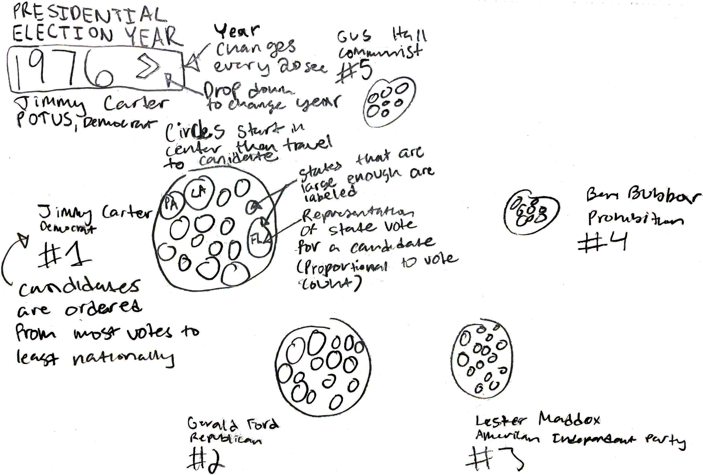
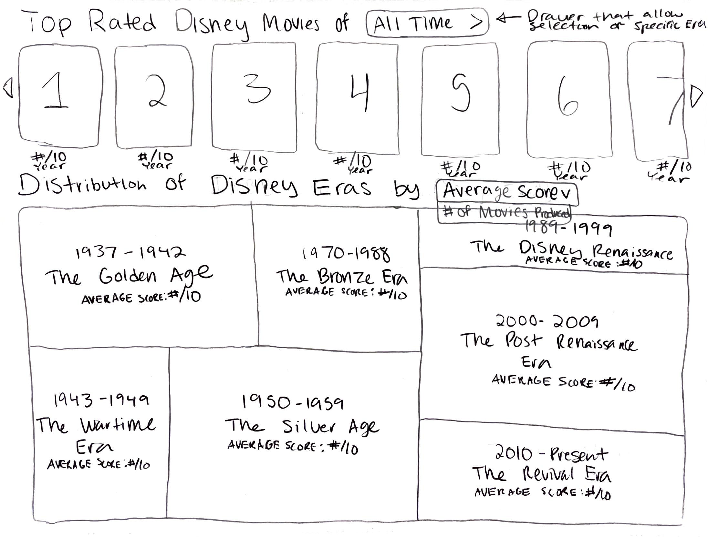
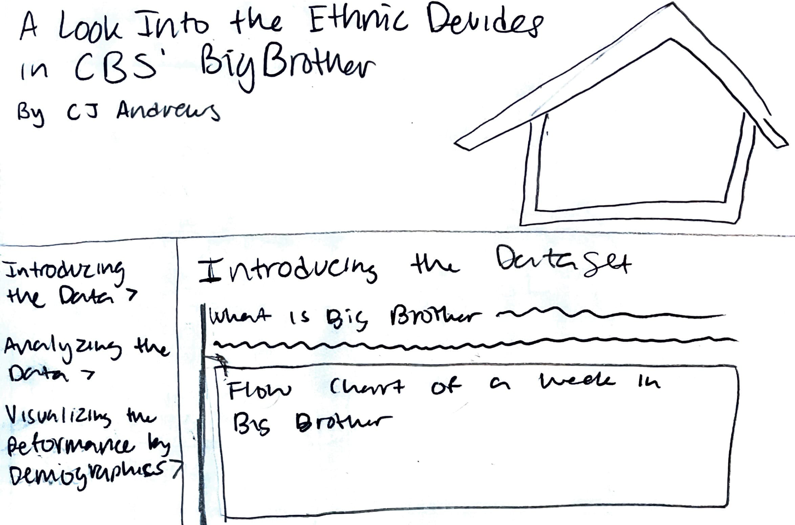
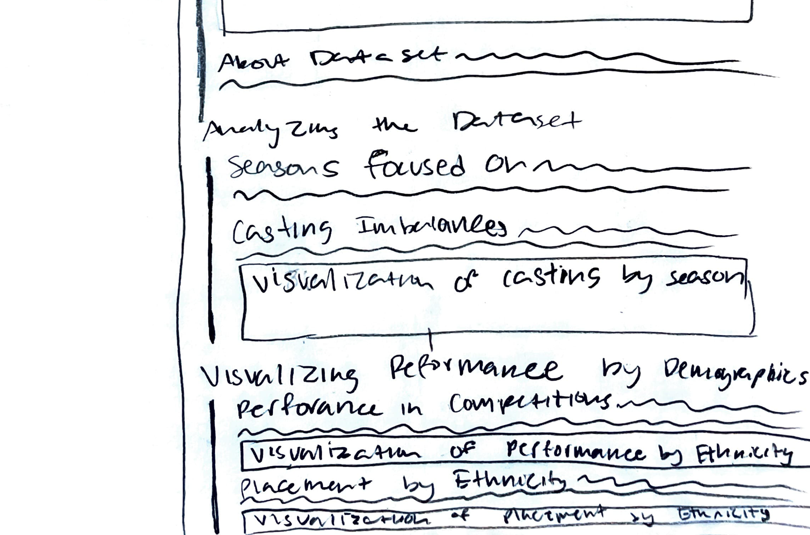

P3.js - D3.js - CSS - Python
Web Coding
In college, I developed a keen interest in programming through acquiring a computer science minor.
While I understood programmatic thinking would be important to communicating with developers in future, I also began to see the avenues of creativity it unlocks as a designer.
Beginning by learning object-oriented programming in Java, I continued my studies by programming visualizations at MORSE, managing Language University's website, and coding my portfolio.
Learning to harness these tools has allowed me to approach UI design from a front-end developer's point of view. Check out some of my projects below.

US Presidential Election Returns By State Since 1976
Based on a dataset by the Harvard Dataverse and MIT Election Data + Science Lab, this beeswarm chart illustrates the popular vote distributions from the 1976-2020 US presidential elections. For each election year, the top four candidates, their party, and their vote returns are displayed.
This d3.js visualization uses the concept of force simulation to group circles, each representing a state party's total votes for a candidate, in order to conceptualize the popular vote returns for each election year. In turn, this information also allows one to track the movement in political parties over the past five decades.
Get ready to explore some votes 🇺🇸
UI Sketch
Disney Cinema Through the Ages
The visualization explores the key concepts, fan + critic reception, and box office earnings of the seven eras of Disney movies.
Sameer Patel’s dataset provides a reliable list of Disney movie titles and release dates ranging from 1937 to August 2021. This dataset is used to retrieve movie posters and critic + fan scores for each entry from OMBD and Movie DB, two movie-related APIs.
All of this information is then used to populate bar graphs comparing each decade's averaged data and an interactive exploration of movie posters sorted by fan rating.
Overall, the design of the page is a journey of nostalgia that allows users to learn more about their favorite movie or Disney era.
UI Sketch
Ethnic Disadvantage in Big Brother
Big Brother is a CBS reality show that follows a house of 12-17 players that must vote out each other to be the last one standing.
A big issue with the show since its beginning has been the lack of diversity in their casting. Due to the larger proportion of white players, minorities are routinely excluded from the major alliances each season and voted out early in the game.
Based on a Kaggle dataset, this visualization investigates each season's contestant data to illuminate the consistency and severity of this issue.
Starting with a summary of the history, the visualization then presents three visualizations that examine competition wins, season placement, and casting in terms of ethnic distribution.
Technically, this project explores the capabilities of sticky positioning to create the navigation bar and CSS grid for the overall layout.
Sketch of Landing
Sketch of Body
Big Brother Demographics by Season
This visualization follows in the vein of the previous project by once again exploring the concept of ethnic disadvantage within Big Brother.
It differs, however, in its use of interactivity and d3.js transitions to create a dynamically rendered bar chart that illustrates the gender and racial gap in casting and season placement among contestants.
The project employs the d3.js data update pattern to update the data based on the user's selected filters and subsequently render the corresponding visuals.
Top 100 Companies and Investors
This visualization explores the connections between the world's top 100 companies and top 100 investors.
This project provided the opportunity to investigate how to create visualizations in p5.js, a visualization library which focuses on drawing shapes based on pixel location in an SVG canvas. Prior to this project, I had mostly concerned myself with the scale-based methodology that d3.js follows.
This project also required me to learn more about absolute positioning to create a modal that displayed each company and investor's list of investments. Finally, within this modal, I dynamically rendered divs with a width proportionate to the investment size it represents, a new way to create a bar chart that I found intriguing.
Finally, I used Javascript classes to store the list of investments associated with each investor and company in the dataset. Organizing the data into objects made it easier to access these important lists of investments and draw them upon the user's hover of a specific company or investor.
Starting vs Mid-Career Salary By College Type
In the United States, around 71.1% of students attend a 4-year institution after graduating high school. To pay the steep college price tag, many students take out student loans to cover their tuition. After graduation, it is important that the job opportunities waiting for them can pay off their debt for financial security.
Based on a WSJ Kaggle dataset, the scatterplot offers insight into the salary earnings of college graduates based on the type of school they go to: state, "party", engineering, liberal arts, or ivy league.
Filter by college type for a clearer look at where schools of your desired type fall in terms of starting vs mid-career salaries. Toggle between median mid-career earnings and the 10th, 25th, 75th, and 90th percentiles of mid-career salaries.
Flappy Circle
A recreation of the popular Flappy Bird mobile game, this project asks the user to help a yellow circle avoid approaching pipes that seek to bring about the dreaded GAME OVER.
Using Javascript and d3.js, the user's clicks on the space bar are mapped to the upward movement of the circle using Javascript.
The game is run using Javascript's built in setInterval method to redraw the scene at a consistent pace, thus simulating movement.
A list of pipes is updated at a consistent time interval with new pipes, the deletion of pipes that have traveled off the screen, and updated positioning of the pipes.
Finally, I employed insertion sort to update the leaderboard with the user's most recent score and sort this incoming score into its ranked position.
Sketch of Game Mechanics and UI

Sketch of Leaderboard